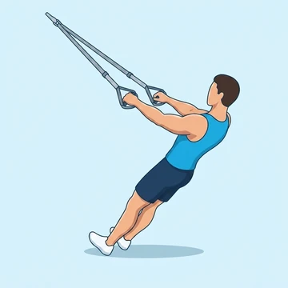
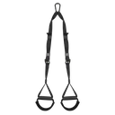

TRX Row
This bodyweight pulling exercise uses a suspension trainer to target your entire back, building strength in the lats, rhomboids, and biceps.
Back · Suspension Trainer · Beginner


Muscles worked by the TRX Row
Primary
Secondary
Also called: lats, lat, latissimus dorsi, latissimus, back wings, rhomboid.
Equipment

Suspension TrainerAlso called: trx, trx straps, suspension straps, bodyweight straps, inversion straps.
How to do the TRX Row
- Grasp the handles of a suspension trainer with an overhand grip, palms facing each other.
- Lean back, extending your arms fully, keeping your body straight from head to heels.
- Engage your core and pull your chest towards your hands, squeezing your shoulder blades together.
- Pause briefly at the top, then slowly lower yourself back to the starting position with control.
- Maintain a rigid body throughout the movement, avoiding any sagging in the hips.
Form tips
- Adjust your foot position: the closer your feet are to the anchor point, the harder the exercise.
- Keep your elbows close to your body to emphasize the lats, or flare them slightly for more upper back.
- Focus on initiating the pull with your back muscles, not just your arms.
- Control the eccentric (lowering) phase to maximize muscle engagement.
At a glance
| Body part | Back |
|---|---|
| Category | Strength |
| Force type | Pull |
| Mechanic | Compound |
| Difficulty | Beginner |
| Equipment | Suspension Trainer |
| Goals | Hypertrophy, Strength |
| Tags | Pull day, Calisthenics |
| MET | 6.0 (metabolic equivalent, for calorie estimates) |
| Unilateral | No |
| Bodyweight | No |
| Dataset id | trx-row |
TRX Row in German & Spanish
| German | TRX-Rudern |
|---|---|
| Spanish | Remo TRX |
Descriptions, instructions and tips ship in all three languages in the JSON.
Related exercises
Exercise data (JSON)
The record below is exactly what exercises.json ships for this exercise — names, descriptions, instructions and tips in English, German and Spanish.
{
"id": "trx-row",
"name_en": "TRX Row",
"name_de": "TRX-Rudern",
"name_es": "Remo TRX",
"description_en": "This bodyweight pulling exercise uses a suspension trainer to target your entire back, building strength in the lats, rhomboids, and biceps.",
"description_de": "Diese Körpergewichts-Zugübung nutzt einen Schlingentrainer, um deinen gesamten Rücken zu trainieren und Kraft in Latissimus, Rautenmuskeln und Bizeps aufzubauen.",
"description_es": "Este ejercicio de tracción con peso corporal utiliza un entrenador de suspensión para trabajar toda tu espalda, desarrollando fuerza en los dorsales, romboides y bíceps.",
"category": "strength",
"force_type": "pull",
"mechanic": "compound",
"difficulty": "beginner",
"equipment": "suspension_trainer",
"body_part": "back",
"primary_muscles": [
"latissimus_dorsi",
"rhomboids"
],
"secondary_muscles": [
"biceps_brachii",
"posterior_deltoid",
"trapezius"
],
"goals": [
"hypertrophy",
"strength"
],
"tags": [
"pull_day",
"calisthenics"
],
"variation_group": "row",
"is_unilateral": false,
"is_bodyweight": false,
"instructions_en": [
"Grasp the handles of a suspension trainer with an overhand grip, palms facing each other.",
"Lean back, extending your arms fully, keeping your body straight from head to heels.",
"Engage your core and pull your chest towards your hands, squeezing your shoulder blades together.",
"Pause briefly at the top, then slowly lower yourself back to the starting position with control.",
"Maintain a rigid body throughout the movement, avoiding any sagging in the hips."
],
"instructions_de": [
"Fasse die Griffe eines Schlingentrainers im Obergriff, Handflächen zueinander.",
"Lehne dich zurück, strecke die Arme vollständig aus und halte deinen Körper von Kopf bis Fersen gerade.",
"Spanne deinen Rumpf an und ziehe deine Brust zu den Händen, indem du die Schulterblätter zusammenführst.",
"Halte kurz oben inne, dann senke dich langsam und kontrolliert in die Ausgangsposition zurück.",
"Halte den Körper während der gesamten Bewegung steif und vermeide ein Durchhängen der Hüften."
],
"instructions_es": [
"Sujeta las asas de un entrenador de suspensión con un agarre prono, las palmas de las manos enfrentadas.",
"Inclínate hacia atrás, extendiendo completamente los brazos y manteniendo el cuerpo recto de la cabeza a los talones.",
"Activa tu core y tira del pecho hacia las manos, juntando los omóplatos.",
"Haz una breve pausa en la parte superior, luego baja lentamente a la posición inicial con control.",
"Mantén el cuerpo rígido durante todo el movimiento, evitando que las caderas se caigan."
],
"tips_en": [
"Adjust your foot position: the closer your feet are to the anchor point, the harder the exercise.",
"Keep your elbows close to your body to emphasize the lats, or flare them slightly for more upper back.",
"Focus on initiating the pull with your back muscles, not just your arms.",
"Control the eccentric (lowering) phase to maximize muscle engagement."
],
"tips_de": [
"Passe deine Fußposition an: Je näher deine Füße am Ankerpunkt sind, desto anspruchsvoller ist die Übung.",
"Halte die Ellbogen nah am Körper, um den Latissimus zu betonen, oder spreize sie leicht für mehr oberen Rücken.",
"Konzentriere dich darauf, den Zug mit den Rückenmuskeln zu initiieren, nicht nur mit den Armen.",
"Kontrolliere die exzentrische (senkende) Phase, um die Muskelaktivierung zu maximieren."
],
"tips_es": [
"Ajusta la posición de tus pies: cuanto más cerca estén tus pies del punto de anclaje, más difícil será el ejercicio.",
"Mantén los codos cerca del cuerpo para enfatizar los dorsales, o ábrelos ligeramente para trabajar más la parte superior de la espalda.",
"Concéntrate en iniciar la tracción con los músculos de la espalda, no solo con los brazos.",
"Controla la fase excéntrica (de descenso) para maximizar el compromiso muscular."
],
"met": 6.0,
"images": {
"flat": {
"start": "images/flat/trx-row-start.webp",
"peak": "images/flat/trx-row-peak.webp"
}
}
}Fetch just this exercise
const { exercises } = await fetch(
"https://exercise-dataset.com/exercises.json"
).then(r => r.json());
const ex = exercises.find(e => e.id === "trx-row");Free for personal and commercial in-app use with attribution (“Exercise data by RepDB”) — see the license and ready-made attribution snippets. Redistributing the data as a dataset or API is not permitted.